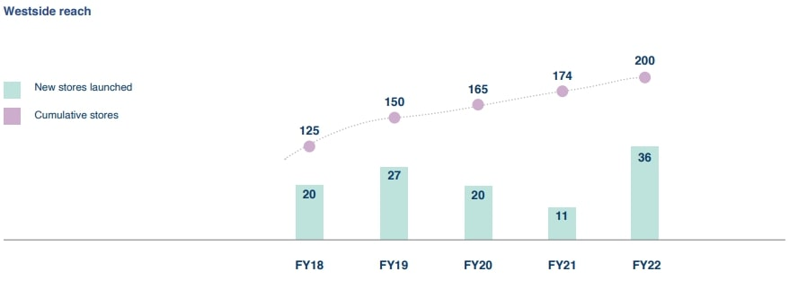
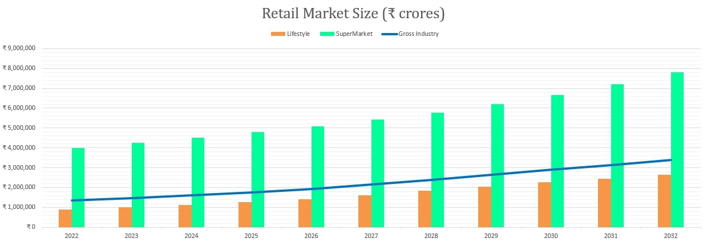
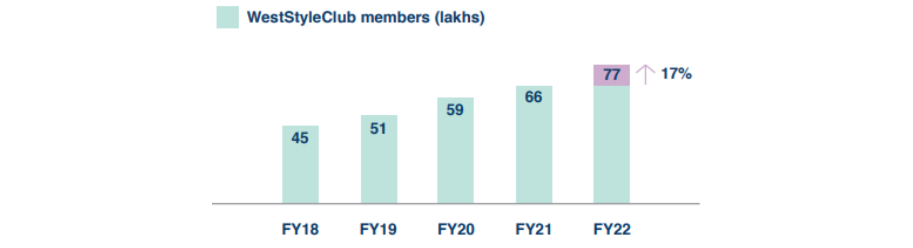
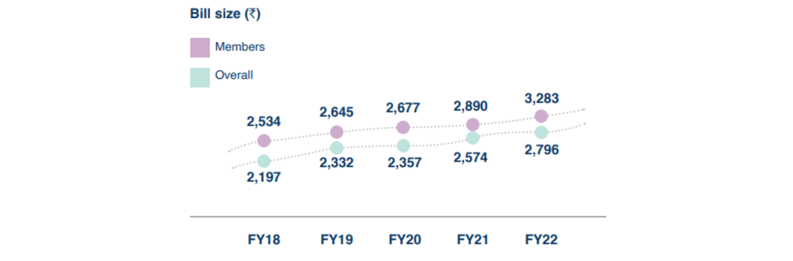
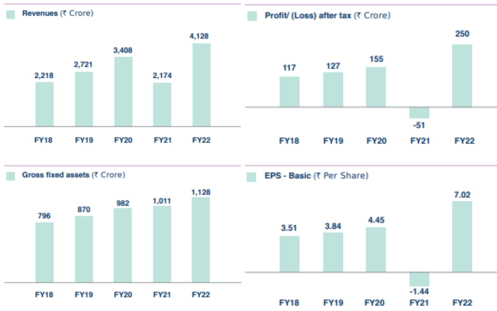
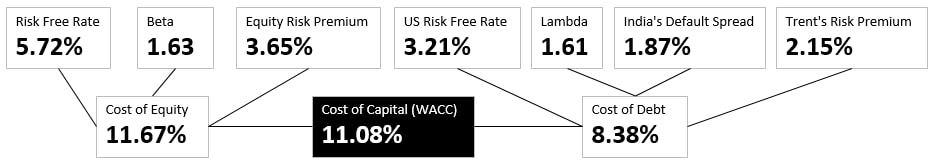
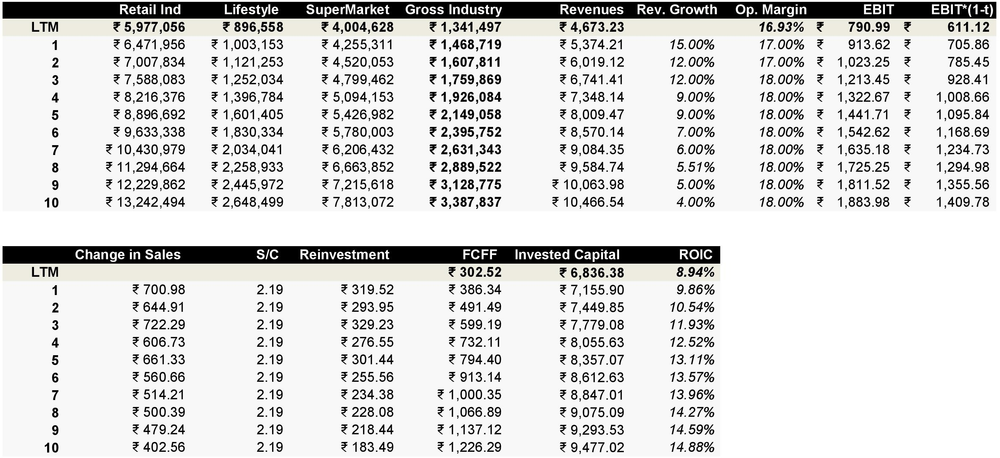
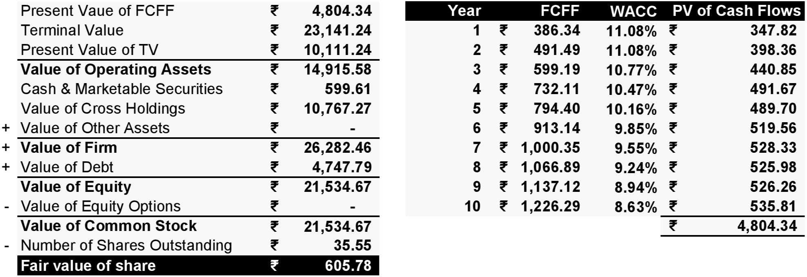
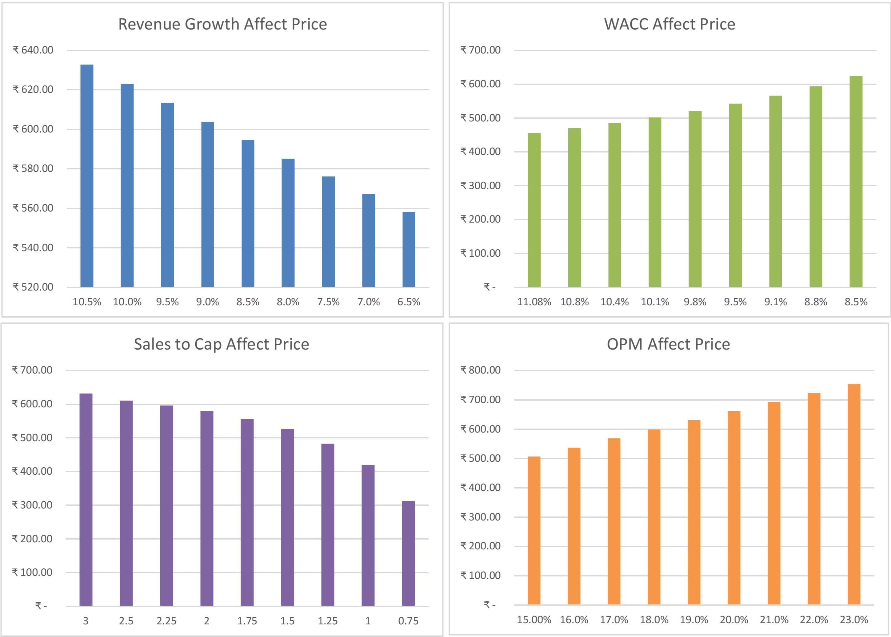
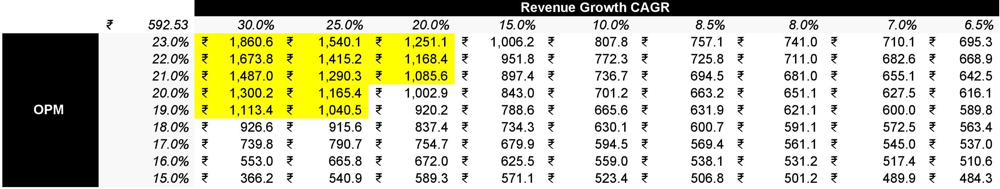

Trent Ltd - Any Zara lovers out here?
Trent Ltd is involved in lifestyle retail business of apparels, footwear and accessories. India’s apparel market is estimated at ₹59,300 crores in 2022 and the Indian fashion industry is the sixth largest market in the world.
Trent Ltd's flagship product is Westside, which offers branded fashion apparel, footwear and accessories for women, men and children at attractive prices. They have some alliances like Zara, Massima Dutti, Utsa and Landmark.
They are also involved into Food & grocery retail business, running Star Market in 50-50 Joint Venture. India's online grocery market is expected to grow from 10% to 30% market share by 2025. They have 51% stake in Booker Wholesale, which serve kirana stores, hotels and restaurants with products in categories across staples, processed foods, confectionery, personal care, home care, soft drinks and dairy. Here are some key pointers on Trent Ltd Business Model and Valuation:
Trent Ltd's Value (WestSide): Major Products include lifestyle retail stores like WestSide (flagship product), Zudio, Zara (which creates about 35% of Trent's total value), Massimo Dutti and food/grocery retail business like Star Market and Booker India Ltd. There are two ways that Trent Ltd can enhance their value,
First, reach operational efficiency of highest order in their existing stores (which can take them just far enough). Right now, there are earning return on capital of 8.94% while their cost of capital is 11.08% (aka they are destroying value). Although, they are going to turn things around by improving their return on capital to 14.88% and decrease their cost of capital to 8.63% (based on my upbeat story of Trent Ltd), but they need to be careful about expanding too quickly (they are already reinvesting 50% of their after tax operating profit) and not achieving appropriate operational efficiency from their existing and future stores. Trent is earning ₹9,950 per square feet in FY22, which is still lower than pre covid levels.
Second, open more stores and maintain their current operational efficiency in future stores. Trent Ltd opened 36 new Westside stores in FY22 which is a big jump from FY21 (11 stores). Obviously, the issue of opening less stores is due to the pandemic. The cumulative west side stores has reached 200 from 174 in FY21. Growth of a retail business lies in how well can they expand to different geographies without compromising on their current operational efficiency.

Markets that Trent Ltd can grow in: Trent Ltd already has a big presence in lifestyle retail industry with WestSide and Zara. They can expand their food and grocery business (Star Market) which is loss making right now. As per Kearney Research, India’s retail industry is projected to grow at a slower pace of 9% over 2019-2030, from $752 billion in 2022 to $1,407 billion by 2026 and more than $1,800 billion by 2030 (CAGR = 9%).
That's the whole retail industry numbers but we want only the lifestyle retail industry and food/grocery retail industry. I expect the lifestyle retail business to expand from 15% to 20% of total retail market and food/grocery business to drop from 67% to 59% of total retail market. In other words, I am expecting lifetstyle business to take more % in total retail market as I do believe in "Fash Fashion" taking over India in the coming years.
Based on the retail market, I do expect Trent Ltd to keep 85% of their revenues coming from lifestyle and 15% from food/grocery. The Gross Industry is a function of weights and that I forecast for Trent Ltd based on their revenues and the retail market they are aiming to expand in. Right now, they have 0.35% market share of their Gross Industry and I expect them to keep that market share in the future as well.

Competitive Advantages (Business Moats): Trent Ltd already has a big brand association mainly from Zara and WestSide. But, I believe it's not a 'sustainable' competitve advantage especially for a lifestyle retail business which associates themselves with attractively priced lifestyle products. This would mean that there would be a potential "Price War" between similar staged brands.
Let's talk about WestClub Membership plan. If Trent can stick people together and make sure they have to incur a huge switching cost if they leave, they can make a very strong competitive advantage. They have witnessed
strong traction for WestStyleClub - the annual subscription program by promoting themselved on strong platforms like Instagram, Facebook and YouTube. They have over 1.4 million subscriptions in FY22 (aka 17% increase from FY21). This membership plan has helped them achieve sales contribution of over 85% from members, as a growing trend of subscriptions is increasing among lifestyle customers.

Potential Opportunity for Trent Ltd: To take advantage of Fast Fashion, which is a buzz phrase which mean clothing designs that move quickly from the catwalk to stores to take advantage of trends. They already have a franchise right of Zara Stores (with Inditex), who is a already big player in Fash Fashion. Zara has been accused in the past for copying and selling clothing styles without proper commercial rights. Zara is a very profitable business because they generate return of capital way over their cost of capital. If Trent Ltd can incorporate similar strategies, they can make a very good business from Fash Fashion. In India, people spend about $7.01 (₹550) on clothing based on Fast Fashion Purchasing Habits (Source: EuroMonitor International).
The Customers, Pain Points and Pricing: The Target Audience is Urban Middle Class Households. Lifestyle Products are tilted towards women's fashion. Women like variety in their fashion closet especially for their Instagram Feed. They want clothes which only look expensive but can be bought at an attractive price i.e. On Sale. An Average Bill Size from WestSide Club members is around ₹2,800.

Revenues to Profits: Trent Ltd biggest expenditure are their employee benefit expenses, cost for leasing assets, advertising and marketing expense and freight charges. They make about 16.93% Operating Profit Margin. Below are four main financial highlights of Trent Ltd:

Competition: Major Competition comes from Metro Brands, V-Mart, Shoppers Stop, Future Lifstyle Fashions and V2 Retail. Some purely occasion fashion brands like Manyavar on a lesser extent. Retail business runs well on first mover advantage. Trent Ltd needs to expand quickly AND balance their operational efficiency at the same time to stay at the top.
Strengths and Weakness: Trent Ltd has a big brand name association with Zara, that's a strength! The weakness is their operational efficiency (₹0.68 of Sales for every ₹1 of Invested Capital) and they have Return on Capital (8.94%) which is lower than Cost of Capital (11.08%) as of FY22. In other words, they earn less than their cost of capital.
My Narrative and Valuation
Based on the key pointers and fundamentals, here are some forecasts and judgements that I made to value Trent Ltd. It can be wrong, it's a forecast overall!
1) The Market Size: Trent Lts operates in Lifestyle Retail and Food/Grocery Business. India’s total retail industry is $752 billion in 2022. The Gross Industry is calculated based on the revenue weights today, which means 85% market of Lifestyle Retail and 15% market of Food/Grocery Retail. The total gross industry, that I come up with, is ₹13.41 lakh crores in FY22 and it will grow at a CAGR of 9.71% for the next 10 years. Lifestyle Retail Business is only 15% of the total retail industry. By the end of 10 years, I believe that the lifestyle business would increase to 20% of total retail industry. Why? Fast Fashion is already a thing, it can go upwards from here.
Online retail market in India will rapidly increase. Trent Ltd WestClub members will become their biggest asset in the future. Even online penetration of retail is expected to reach 10.7% by 2024 versus 4.7% in 2019. If Trent Ltd do crack into the Food/Grocery Business in the future, their gross industry and revenues should increase beyond my estimate. But at this moment, I don't believe that their Food/Grocercy Business would be outcompete the Lifestyle Business.
2) The Market Share: Let's get one thing out of the way. Trent Ltd cannot attain a double digit market share. Why? Because retail business are run by many small players (unorganized and organized). In FY22, they have 0.35% market share of their gross industry. I do believe they can maintain their 0.35% market share for the next 10 years and still make bank load of cash. But if someone is forecasting even a 10-15% market share, that person might be running into a fairytale.
3) Revenues: After gauging the industry numbers, the next question is the future revenues. It's reasonable to think that their revenues would be ₹10,466 crores by year 10. Why? It's no rocket science. I just feel they can cross ₹10,000 crores by year 10. I played with revenue growth rates to get to that number (₹10,000 crores). The revenue growth goes from 15% to 4%. If you feel they can pull off ₹20,000 crores, I won't say you are wrong! You may have a more upbeat narrative than I have! Revenue is the most important number in valuation and I don't want to overshoot it.
4) Operating Margin: The next most important question is, how much do they keep from their revenues? I don't see any strong competitive advantages (such as brand name) that drive the operating margin more than the industry average. I don't think people buy lifestyle products from Westside due to it's brand name. For example, Apple has incredible operating margin because it's an Apple Iphone. Operating Margin are driven by brand name, and I believe Trent should settle for industry average Operating Margin of 18%.
5) Reinvestment: How much Trent Ltd has to reinvest in their business to get the above revenue growth and operating margin? That depends on operational efficiency! Retail Business usually requires high capital expenditure like huge Leasing and Aquisition Cost. But more than capital expenditure, Retail business has huge working capital needs. Trent Ltd has not been efficient enough in their operations till now. They make ₹0.68 of Sales for every ₹1 of Invested Capital. While the industry makes ₹2.19 of Sales for every ₹1 of Invested Capital.
If they follow the industry average efficiency in the future, they would need to still invest about ₹264 cr per annum on average for the next 10 years (with spending major expenditure on working capital needs) to improve their Return on Capital to 14.88%. Trent Ltd has reinvested 50% of their earnings in FY22 but as the company matures, it can reduce it's reinvestment rate to about 13% while maintaining a high Return on Capital.
6) The Cost of Capital: I used CAPM model to find out the Cost of Equity of 11.67% and risk premiums add-ons (country + market + company) to calculate the Cost of Debt of 8.38%. The overall cost of capital (WACC), that I came up with is 11.08% based on capital structure of debt and equity in Trent Ltd. The cost of capital includes all the operating risk with the company.



Based on the narrative I explained above, I came up with a fair value of ₹605.78 per share. Trent Ltd's Stock is trading at ₹1,049.10 per share (June 27, 2022).
Sensitivity Analysis
Is the current market price justified? If yes, What's going to happen to make that justification right?
The four main value drivers of my intrinsic valuation are Revenue Growth (CAGR), Operating Profit Margin, Sales to Capital Ratio and Weighted Average Cost of Capital (WACC). Here are the four value drivers affecting price per share.

Just looking at the bar charts at different points, Sales to Capital Ratio do not affect a major price change, but it should be kept between 1.5 - 2.5. Below 1 raises havoc! With WACC, there is a range that I believe Trent Ltd can operate in. So what we left is with Revenue Growth (CAGR) and Operating Margin (OPM) as the main drivers that affect price the most.
Let's look at what's going to happen to make the current market price justifiable (keeping risk and efficiency same).

Just for some context, I forecasted revenues to grow at a 8.4% CAGR and having an operating margin of 18% for the next 10 years. I arrived at a price of ₹605.78 per share. For the current market price of ₹1,049.10 per share to be justifiable, Trent Ltd needs to grow their revenues by 20% CAGR at 21% operating profit margin or grow revenues at 25% CAGR at 19% operating profit margin.
Being in a lifestyle retail business which focuses on 'attractive pricing', there should a cap on how much your operating margins grow. So, one explaination for price bump is the fact that the market is forecasting revenues to grow 4 times my forecasts. There may be a plausible story playing in the background, which I may not know about!
Thank you for reading! Check out my valuation by downloading the DCF Trent's Analysis below.